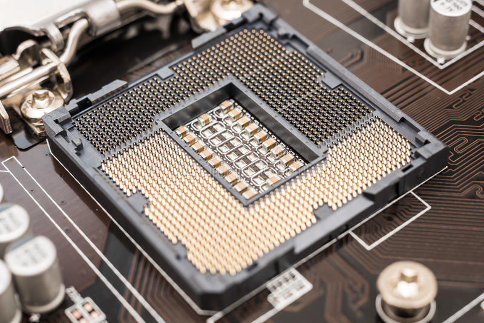

|  | In computer hardware, a CPU socket or CPU slot contains one or more mechanical components providing mechanical and electrical connections between a microprocessor and a printed circuit board (PCB). This allows for placing and replacing the central processing unit (CPU) without soldering. |
Common sockets have retention clips that apply a constant force, which must be overcome when a device is inserted. For chips with many pins, zero insertion force (ZIF) sockets are preferred. Common sockets include Pin Grid Array (PGA) or Land Grid Array (LGA). These designs apply a compression force once either a handle (PGA type) or a surface plate (LGA type) is put into place. This provides superior mechanical retention while avoiding the risk of bending pins when inserting the chip into the socket. Certain devices use Ball Grid Array (BGA) sockets, although these require soldering and are generally not considered user replaceable.CPU sockets are used on the motherboard in desktop and server computers. Because they allow easy swapping of components, they are also used for prototyping new circuits. Laptops typically use surface-mount CPUs, which take up less space on the motherboard than a socketed part. |
|